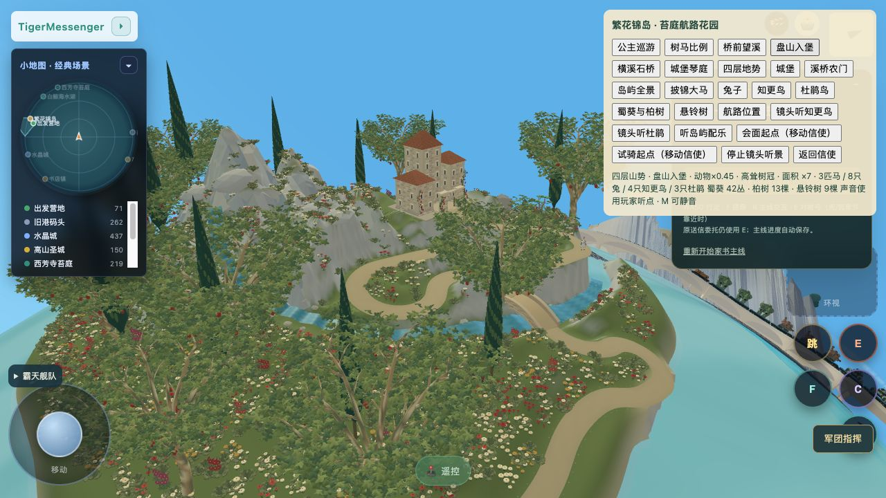
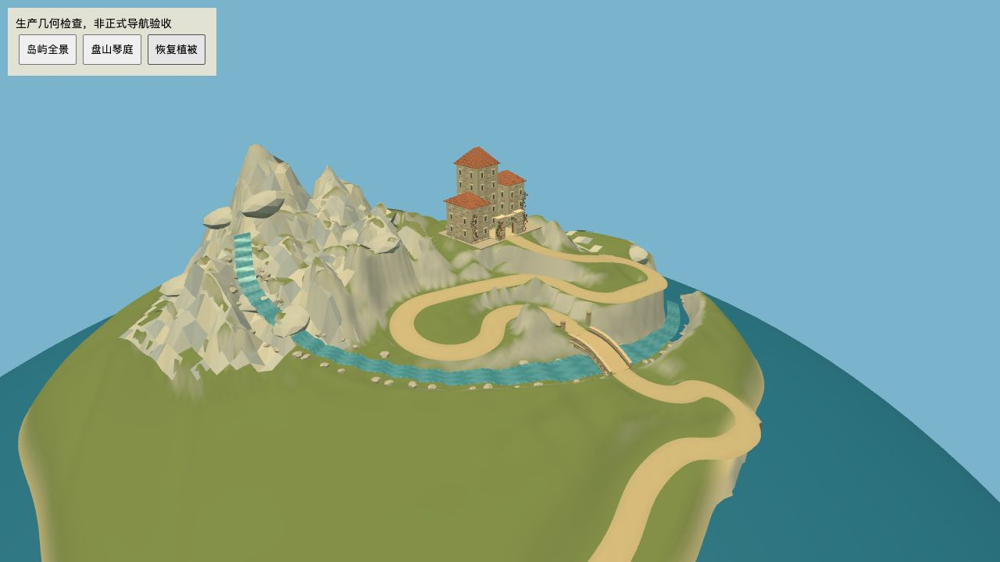
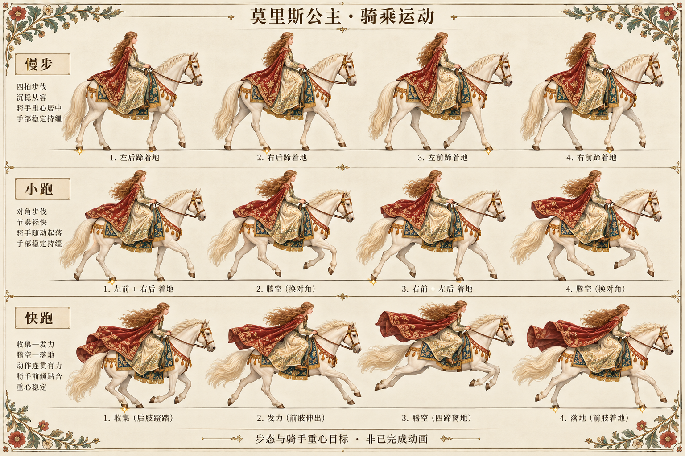
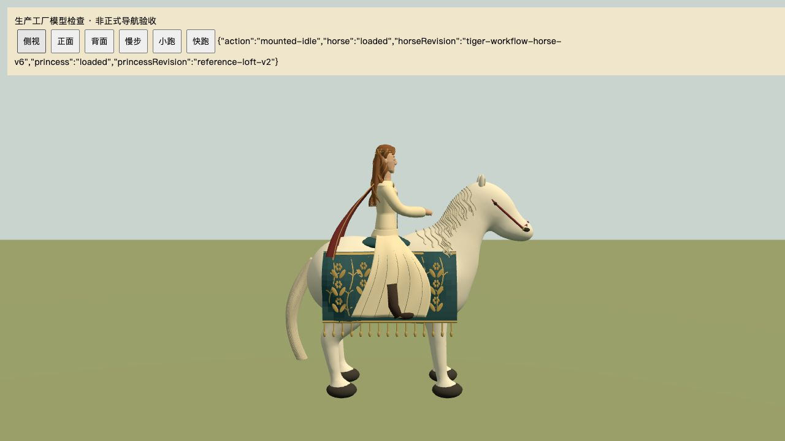
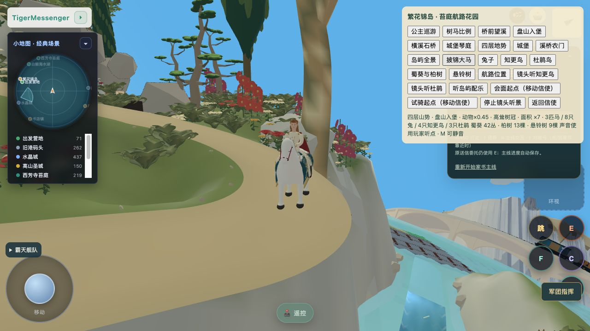

地形：布局目标与当前正式画面


已改：平顶山盘改为尖圆主峰、错位山肩；回转内锥形山包降低为花坡；上游溪谷水位调整并拆出短跌水；路下真实切面增加起伏。桥位、3.2米道路、城堡入口、半山琴庭及原铁路保留。
未达标：琴庭外缘仍有连续高壁，裸山局部起伏仍偏尖，岩肩的宽窄与断续还没有达到目标。

当前生产工厂裸山GPU，组件检查，不是正常导航验收。
当前正式入口 r47。真实几何已经修改；此页明确保留未达到目标的部分，不将“能运行”视为造型完成。
正式游戏 · 白马动作组件：慢步／小跑／快跑／停帧 · 地形组件：裸山检查 · 验证与缺项

已改：平顶山盘改为尖圆主峰、错位山肩；回转内锥形山包降低为花坡；上游溪谷水位调整并拆出短跌水；路下真实切面增加起伏。桥位、3.2米道路、城堡入口、半山琴庭及原铁路保留。
未达标：琴庭外缘仍有连续高壁，裸山局部起伏仍偏尖，岩肩的宽窄与断续还没有达到目标。

当前生产工厂裸山GPU，组件检查，不是正常导航验收。


已改：头颈收短、喉部挖出真实凹弧、波浪象牙色鬃毛、蓝底金纹马具；慢步支撑／摆腿、小跑对角、快跑顺序与腾空阶段分开处理。保留既有骑手、缰绳和巡游入口。
未达标：身体肌肉与关节细节、长鬃尾层次、锦缎细纹、四肢连续贴地及完整骑手随动仍与目标有差距。此模型仍是有明确缺项的迭代版。

正常游戏r47实际运行，非离线渲染。
13项路线／桥／城基／琴庭／铁路接口，11项巡游工厂检查，10项真实GLB中立四蹄／挂接／恢复检查，以及三档速度动作控制检查通过。正式r47已读到V6 loaded、骑手可见且移动，console errors为空。完整最终往返与目标造型均未验收。
未提交、推送或发布。原源备份和模型版本保留。